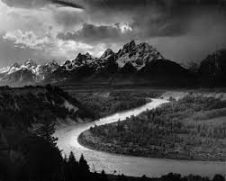
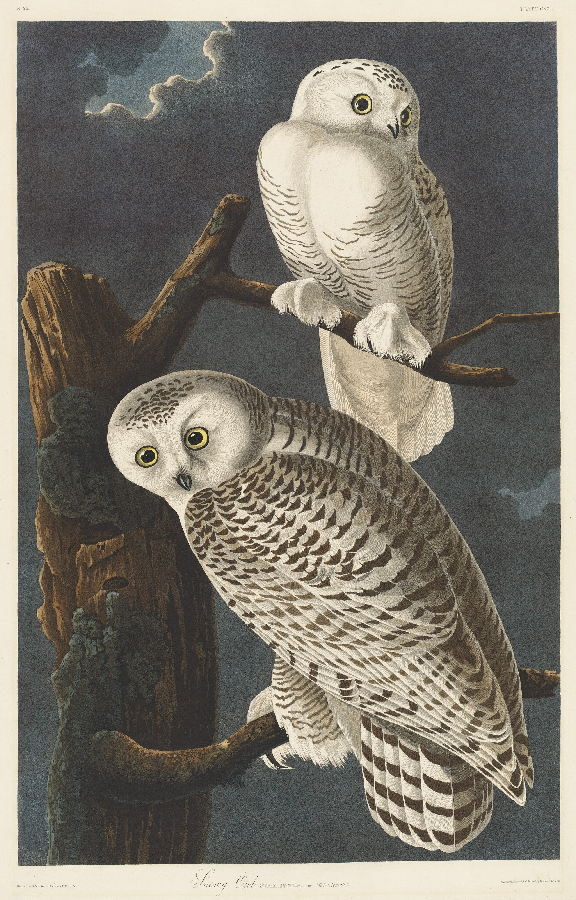
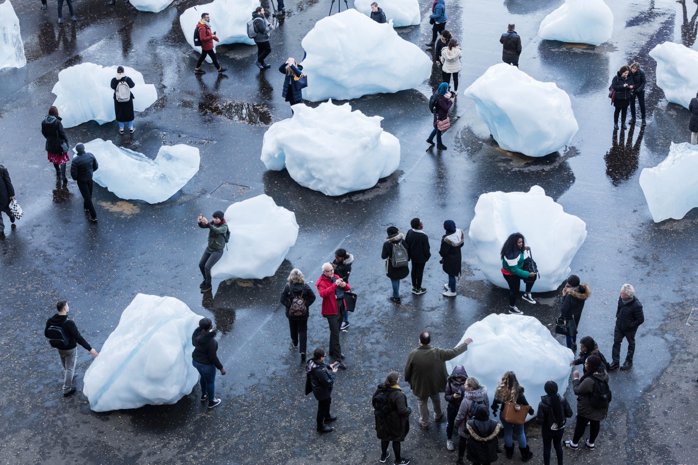
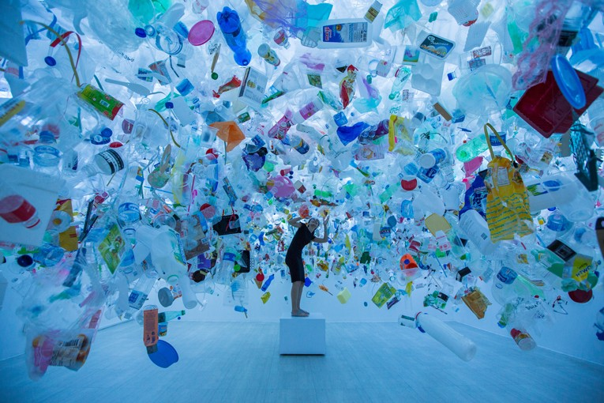
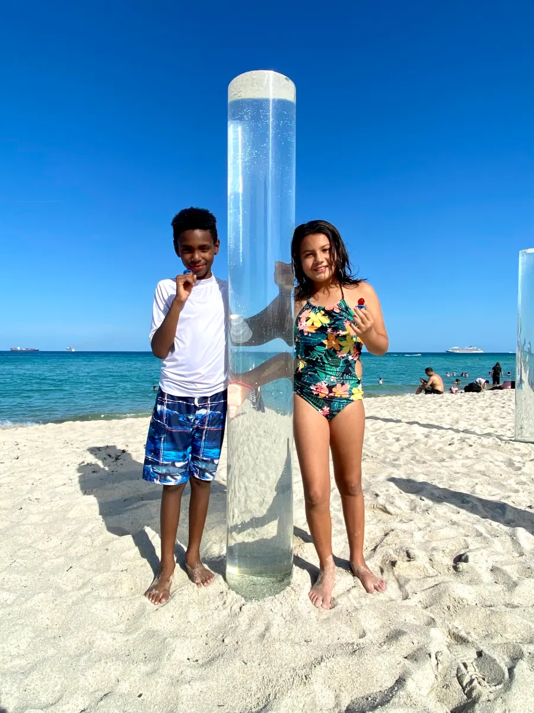
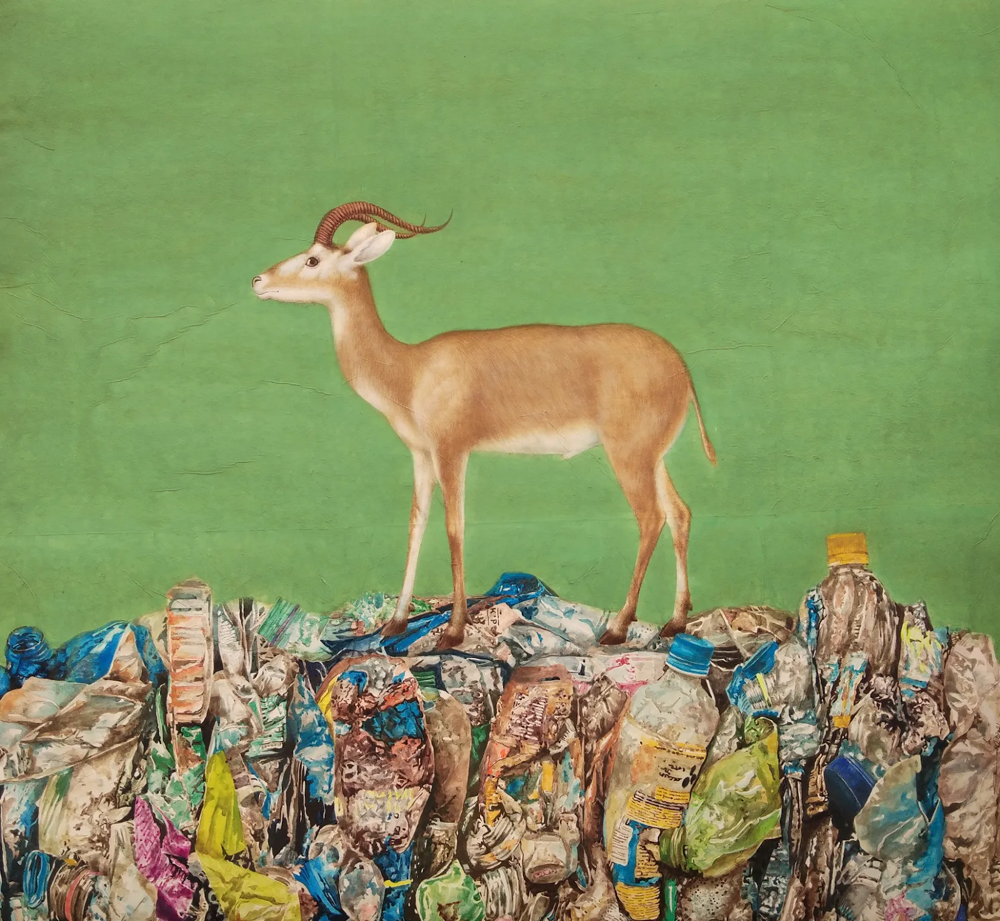
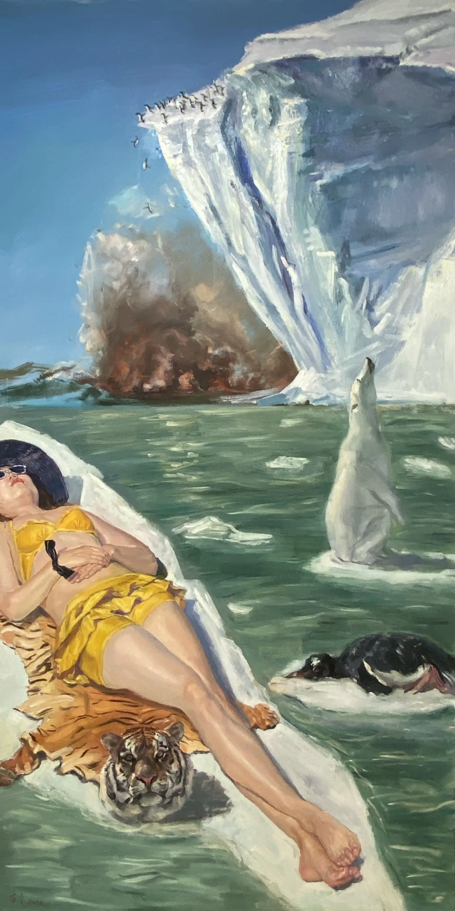

I chose this artwork because it shows how harmful industrial waste can be for our ecosystem. It also addresses environmental sustainability because it uses old tires to create something new and beautiful from what would have only been food for a landfill. It highlights the potential for recycling and reuse in art everywhere. Instead of continuously buying and using new products that add to an already huge landfill in the end, we could try using things that have already been used once. We could give them one last show, one last use, before going to the landfill. This piece connects to my topic because it is important to actively practice environmental sustainability or you are only adding to the deterioration of it.
This is a photograph of the beautiful Grand Teton National Park in Wyoming. I chose this piece because I think it is a beautiful photo and I love how healthy the land looks. It also promotes environmental conservatism, which in turn promotes environmental safety and to be conscious of how we affect it. This piece emphasizes the need to preserve landscapes like these through whatever conditions the environment may bring. It connects to my topic because part of preserving the earth's natural climate is preserving land like this, land that thrives on its own.
This painting of a couple of snowy owls in a snowless tree is a sad depiction of the effect climate change can have on native animals. Species like these are tremendously affected by climate-induced habitat changes because they thrive in the cold blanket that snow brings. It also promotes discussions on biodiversity loss because of the compassion for the owls the viewer is expected to have. This connects to my topic because it shows how climate change doesn't just affect the earth or humans, but also the animals that live here with us. It advocates for compassion for animals losing their homes and change to better the environment for them.
For this piece, they placed many large blocks of glacial ice in public spaces to show the speed that ice is melting in places where it shouldn't be. It is important because it raises awareness about global warming and melting ice caps. People usually aren't aware of how big of a problem global warming has become until they can see it for themselves. I think this is a perfect way to show it. This piece is related to my topic because it shows how climate change is affecting the ice caps and ruining their ecosystem. It's causing many polar animals to die and soon they will become extinct if we don't work on changing our habits soon.
For this piece, the artist collected and organized 500kg of ocean plastic and put it all in one place. He created an immersive installation out of the plastics to highlight the severity of marine pollution. This is important because we should be making a conscious effort to produce and use less plastic because of how much of it ends up in the ocean and harms ocean life. It connects to my topic because being more conscious of our impact on the climate means taking into account the amount of waste we produce and the effect it has on the environment. The production as well as the discarding of these plastic pieces both take a tremendous toll on the health of our world.
Ana’s work inspires the audience to think about how all the plastic they use affects the ocean. For her piece she installed giant tubes on the beach along the shore and filled them with water. It is meant to show a visual representation of how much land will be lost if sea levels continue to rise due to ice caps melting. This relates to my theme because the climate changing and global warming is what's causing the ice caps to melt and in turn raise the sea level. Its easy to imagine how much will be lost if sea levels rise more but her work makes it so much more obvious how bad it will be.
I chose this piece because of its mixed media metaphorical representation of what it's like for humans and animals to live together. In it the animal stand on top of a mountain of human made plastics. These plastics are things we use veryday that we forget about and disregard like they have no affect on our world. The mammal is a symbol of life on land, misplaced on a pile of waste. It shows how we should be more conscious of how we use these plastics that so gravely affect natural life. It connects to climate change because of the abundance of fossil fuels being used to make these soon trashed plastics which emit a lot of greenhouse gases into our atmosphere.
I choose this piece because it pushes the audience to really think about how awful we must seem to the rest of the animal kingdom. In the piece endangered animals are either jumping into a fire, lifeless or floating on the ice with nowhere else to go. All this while the lady relaxes without a care in the world for how much she is affecting everyone around her. This mirrors humanity's negligent attitudes towards the effects of climate change on our wildlife. It relates to my topic because it shows how much of the natural world is decaying because humanity will do whatever it takes to get what they want.